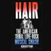
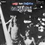

Music: GALT McDERMOT Lyrics: JAMES RADO & GEROME RAGNI
| Portada Cover |
Versión Version |
Año Year |
Idioma Language |
Media | Elenco Cast |
Título de publicación Release Title |
Notas Notes |
|---|---|---|---|---|---|---|---|
 |
Original Off-Broadway Cast | 1967 | EN | 22 Tracks mp3 128kb/s |
Gerome Ragni, Walker Daniels, Steve Dean, Arnold Wilkerson, Suzannah Evans, Linda Compton, Paul Jabara, Jill O'Hara, Sally Eaton, Shelley Plimpton, Jonelle Allen, Steve Dean, Arnold Wilkerson | ||
|  | Cheetah Demo Recording | 1968 | EN | 3 Tracks mp3 226kb/s |
|||
 |
Elio Gandolfi | 1968 | IT | 2 Tracks m4a 151kb/s |
Elio Gandolfi | ||
 |
Original Acapulco Cast | 1968 | EN | 39 Tracks mp3 128kb/s |
Robert Aguilar, Hextor Alvarez, Felipe Baz, Corinne Broskett, Rosalind Clark, Colleen, Barbara Green, Larry, Paul Marichal, Maureen, Mayita, Hugo Norton, Horacio Reni, Tijerina, Yipá | Remastered CD release | |
 |
Original Acapulco Cast | 1968 | EN | 33 Tracks mp3 160kb/s |
Robert Aguilar, Hextor Alvarez, Felipe Baz, Corinne Broskett, Rosalind Clark, Colleen, Barbara Green, Larry, Paul Marichal, Maureen, Mayita, Hugo Norton, Horacio Reni, Tijerina, Yipá | LP rip | |
 |
Original Broadway Cast | 1968 | EN | 32 Tracks m4a 321kb/s |
Gerome Ragni, James Rado, Diane KeatonLamont Washington, Steve Curry, Sally Eaton, Melba Moore, Shelley Plimpton, Jonathan Kramer, Lynn Kellogg, Paul Jabara, Walter Harris, Ronald Dyson | ||
 |
Original Broadway Cast | 1968 | EN | 68 Tracks m4a 249kb/s |
Gerome Ragni, James Rado, Diane KeatonLamont Washington, Steve Curry, Sally Eaton, Melba Moore, Shelley Plimpton, Jonathan Kramer, Lynn Kellogg, Paul Jabara, Walter Harris, Ronald Dyson | Deluxe Edition with bonus tracks | |
 |
Original London Cast | 1968 | EN | 30 Tracks mp3 192kb/s |
Paul Nicholas, Oliver Tobias, Michael Feast, Lucy Fenwick, Andy Forray, Marsha Hunt, Colette Kelly, Linda Kendrick, Annabel Leventon, Rohan McCullough,Peter Straker, Joanne White, Jimmy Winston | ||
 |
Original Munich Cast | 1968 | DE | 56 Tracks mp3 128kb/s |
Reiner Schöne, Su Kramer, Ron Williams, Lyvia Bauer, Charles Berry, Udo Janson, Renate Mauerer, Stella Mooney, Bernd Redecker, Birgit Rüssmann, Donna Summer, Minoru Terada, Shirley Thompson | Haare | 30th Anniversary edition with bonus tracks |
 |
Original Munich Cast | 1968 | DE | 21 Tracks mp3 192kb/s |
Reiner Schöne, Su Kramer, Ron Williams, Lyvia Bauer, Charles Berry, Udo Janson, Renate Mauerer, Stella Mooney, Bernd Redecker, Birgit Rüssmann, Donna Summer, Minoru Terada, Shirley Thompson | Haare | |
 |
Studio Cast Recordings | 1968 | ♫ | 11 Tracks mp3 128kb/s |
First Natural Hair Band | ||
 |
Original Swedish Cast | 1968 | SV | 17 Tracks m4a 265kb/s |
Bruno Wintzell, Bill Öhrström, Judith Gendel, Ann-Sofie Nilsson, Cia Löwgre, Anne Nord, Ulf Brunnberg, Charlie Love, Andrea Anderson, Pelle Ekman, Charlie Elvegård, Bella Fehrlin, Hawkey Franzén, Jane Sannemo | Hår | |
 |
Original Australian Cast | 1969 | EN | 20 Tracks mp3 160kb/s |
Wayne Matthews, Keith Glass, Terry Wilson, Terry O'Brien, Sharon Redd, Wayne Cullo, Margaret Goldie, Creena St Claire, Audrey Keyes, Gillian Jones, Helen Livermore, Teddy Williams, Denni, Tomay Fields | ||
|  | Original Broadway Cast | 1969 | EN | 19 Tracks mp3 192kb/s |
James Rado , Gerome Ragni , Galt MacDermot , Denice Delapenha , Leata Galloway , Melba Moore , James Rado , Sakinah, Allan Nichols , Robin McNamara, George Tipton, Donnie Burks | DisinHAIRited | According to the liner notes, this album is "an extension, an amplification and a continuation of Hair" |
 |
Original London Cast | 1969 | EN | 11 Tracks mp3 160kb/s |
Paul Nicholas, Oliver Tobias, Michael Feast, Peter Straker, Vince Edward, Annabel Leventon, Sonja Kristina, Linda Kendrick, Marsha Hunt, Diane Langton, Leighton Robinson | Hair Rave-up | |
 |
Original Los Angeles Cast | 1969 | EN | 3 Tracks mp3 128kb/s |
3 track EP | ||
 |
Studio Cast Recording | 1969 | EN | 14 Tracks mp3 128kb/s |
Pat Whitmore, Dave Wintour | ||
 |
Studio Cast Recording | 1969 | ♫ | 10 Tracks mp3 320kb/s |
Mort Garson | ||
 |
Studio Cast Recording | 1969 | ♫ | 9 Tracks mp3 128kb/s |
Galt MacDermot | Hair Cuts | |
 |
Studio Cast Recording | 1969 | ♫ | 10 Tracks mp3 243kb/s |
Electric Hair | ||
 |
Studio Cast Recording | 1969 | EN | 20 Tracks mp3 320kb/s |
The Twangy Gang | ||
 |
Studio Cast Recording | 1969 | DE | 20 Tracks mp3 320kb/s |
The Twangy Gang | Haare | |
 |
Studio Cast Recording | 1969 | ♫ | 10 Tracks mp3 198kb/s |
The Don Kirshner Concept | ||
 |
Original Helsinki Cast | 1969 | FI | 19 Tracks mp3 192kb/s |
Aila Halminen, Aila Heikkilä, Marja-Leena Paimensalo, Pekka Pajula, Reijo Paukku, Juha Räsänen, Pirkko Saanakorpi, Jukka Siikavire, Hannele Virta | ||
 |
The Graham Walker Sound | 1969 | EN | 22 Tracks mp3 128kb/s |
Ann Hill, Christine Holmes, Dave Kelsey, Ricky Martin, Tracy Miller, Freddy Ryder | ||
 |
Original Rio de Janeiro Cast | 1969 | PT | 19 Tracks mp3 128kb/s |
Altair Lima, Aracy Balabanian, Armando Bogus, Bibi Vogel, Sonia Braga, Laerte Morrone, Helena Ignez, Fernando Reski, Ricardo Petraglia, Maria Regina, Ariclê Perez, Maria Helena Dias, Neuza Borges | ||
 |
Original Paris Cast | 1969 | FR | 22 Tracks mp3 192kb/s |
Julien Leclerc, Charles Austin, Ann Ballester, Betty Berr, Ronnie Bird, Gloria Carter, Bill Combs | ||
 |
Studio Cast Recording | 1970 | DE | 10 Tracks mp3 128kb/s |
Joe Kienemann, Su Kramer, The Matadors | Haare | |
 |
Original London Cast | 1970 | EN | 21 Tracks mp3 222kb/s |
Paul Nicholas, Gary Hamilton, Paul Burns, Joyce Rae, Sonja Kristina, Peter Straker, Diane Langton, Ena Cabayo, Elaine Paige, Kookie Eaton, Ethel Coley, Chris Neil, Amanda Moore | ||
 |
Original Dutch Cast | 1970 | EN | 17 Tracks mp3 128kb/s |
Oliver Tobias, Bill Van Dijk, Peter Blake, Sarah Brackett, Sue Chaloner, Robert Farrant, Ian Hanson, Robin Lent, Marius Monkau, Del Newman, Pieter Nieuwerf, Ronald Snellenberg, Aggie Teil Stanley | ||
 |
Studio Cast Recording | 1970 | EN | 12 Tracks mp3 320kb/s |
Jacqueline Baxter, Jill Utting, Martin Jay, Mike Allen, Mick Trounce, Valerie Stockwell | ||
 |
Studio Cast Recording | 1970 | DE | 10 Tracks mp3 128kb/s |
Su Kramer, Broadway Matadors, John McLaren, Reddy | ||
 |
Original Italian Cast | 1970 | IT | 18 Tracks mp3 160kb/s |
Roberto Bonanni, Penny Brown, Ann Collin, Cristal Dane, Ronnie Jones, Carlo De Mejo, Edoardo Nevola, Angela Pagano, Luisa De Santis | ||
 |
Original Tel Aviv Cast | 1970 | IW | 21 Tracks mp3 192kb/s |
Margarit Ankori, George Harris, Wally Loate, Zwila Pick, Brenda Stark, Zardok Zarfati | שיער | |
 |
Original Danish Cast | 1971 | DA | 16 Tracks mp3 128kb/s |
Jørgen Olsen, Eddie Skoller, Sven Cleemann, Bente Merete, Annette Klingenberg, Gitte Raae, Ina Løndahl, Jannie Høeg, Mette Antonsen, Jannie Høeg, Claire Raine | ||
 |
Original Oslo Cast | 1971 | NO | 12 Tracks mp3 192kb/s |
Ulf Borge, Unni Christiansen, Bentine Holm, Live Hov, Frank Iversen, Ann Karin Kvamme, Orlando Lelienhof, Hedi Lund, Erik Moll, May Helene Njoten, Eva Nordli, Ivar Norve, Anne Beate Odland, Oystein Selenius Olsen, Helle Ottesen, Yasmin Pettigrew, Sidsel Prestbakmo, Vidar Sandem, Rolf Skogstrand, Peter Straker, Ove Thue, Helge Tuft, Dag Vognstolen | Hår | |
 |
Original Buenos Aires Cast | 1971 | ES | 24 Tracks mp3 160kb/s |
Carolina Fasuolo, Horacio Fontova, Sergio Makaroff, Rubén Rada, Ricardo Acosta, Carlos Avalos, Luis Vacantes | ||
 |
Original Concert Cast | 1971 | EN | 19 Tracks mp3 320kb/s |
Delores Hall,Choir of the Cathedral of St. John the Divine, The Choir of St. Martin's Parish, The Choir of St. Mary's Parish | Divine Hair: Mass in F | |
 |
Original Japanese Cast | 1971 | JA | 17 Tracks mp3 192kb/s |
Fukami Ryusaku, Minoru Terada, Mitsuko Miyake, Hiroshiro Saya, Claude Serizawa, Kahashi Katsumi, Chet Fortune, Isaac Clay, Aono Miho, Yasumi Yamada, Shiba Mikiko, Yoko Matsumoto, Horiuchi Asakyu | ヘアー | |
 |
Original Film Soundtrack | 1979 | EN | 25 Tracks mp3 192kb/s |
John Savage, Treat Williams, Beverly D'Angelo, Cheryl Barnes, Richard Bright, Betty Buckley, Nell Carter, Melba Moore, Miles Chapin, Don Dacus, Ronald Dyson Annie Golden, Charlaine Woodard | ||
 |
Original Film Soundtrack | 1979 | EN | 27 Tracks mp3 192kb/s |
John Savage, Treat Williams, Beverly D'Angelo, Cheryl Barnes, Richard Bright, Betty Buckley, Nell Carter, Melba Moore, Miles Chapin, Don Dacus, Ronald Dyson Annie Golden, Charlaine Woodard | 20th Anniversary Edition | |
 |
Australian Revival Cast | 1992 | EN | 34 Tracks mp3 160kb/s |
Melvin Carroll, Terry Serio, David Argue, Nick Carrafa, Cathy Rutten, Meredith Chipperton, Cindy Ann Lee, Vivien Davies, Armando Hurley, Tina Kopa, Nikki Bennett, Jennifer Davis, Armando Hurley | ||
 |
European Tour Cast | 1992 | EN | 29 Tracks mp3 160kb/s |
|||
 |
Studio Cast Recording | 1993 | DE | 12 Tracks mp3 160kb/s |
Udo Lindberg, Nina Hagen, Peter Bischof, Jane Bogaert, Sabine Bundschuch, Bertel Gebhard, Sandra Loscher, Renate Maurer, Bimey Oberreit, Uwe Ochsenknecht, Hermann Weindorf, Ron Williams | ||
 |
London Revival Cast | 1993 | EN | 27 Tracks m4a 318kb/s |
John Barrowman, Paul Hipp, Andree Bernard, Sinitta, Felice Arena,Pepsi Laurie Demacque, Paul J. Medford, Katherine Mehrling, Sinitta, Rebecca Vere | ||
 |
Studio Cast Recording | 1994 | ♫ | 10 Tracks mp3 320kb/s |
New Bohemian Musical Orchestra | ||
 |
Original Icelandic Cast | 1994 | IS | 12 Tracks mp3 267kb/s |
Heiorun Anna Bjornsdottir, Margret Eir, Benedikt Elfar, Vilhjalmur Godi, Birna Hafstein, Emilíana Torrini, Margrét Vilhjálmsdóttir | Hárið | |
 |
Studio Cast Recording | 1995 | EN | 14 Tracks mp3 320kb/s |
Bobby Crush, Nicola Dawn, John Howard, Carl Wayne | ||
 |
Original Danish Cast | 1996 | DA | 24 Tracks mp3 192kb/s |
Al Agami, Josephine Akvama, Johanne Bolvig, Donna Cadogan, Erann Drori, Yasmin Jacobsen, Xenia Lach-Nielsen, Randi Laubek, Henrik Launbjerg, Bobo Moreno, Arvid Nielsen, Klause Tange | ||
 |
Original Hungarian Cast | 1996 | HU | 19 Tracks mp3 185kb/s |
Csonka András, Fehér Adrienn, Fésűs Nelly, Márton Csaba, Nagy Balázs, Németh Attila, Oroszlán Szonja, Szabó P. Szilveszter, Szomor György, Szurdi Tamás, Tóth András, Tóth Gábor, Xantus Barbara | ||
 |
Original Czech Cast | 1997 | CS | 25 Tracks mp3 128kb/s |
Ilona Csáková, Martin France, Katarína Hasprová, Martin Havelka, Lenka Nová, Jan Revai, Daniela Šinkorová, Lucia Šoralová, Patrik Tenev, Petra Jiří Urbánkové, Ina Urbanová, Dan Vašut, Roman Vojtek | Vlasy | |
 |
Danish Revival Cast | 1997 | EN | 24 Tracks mp3 160kb/s |
Al Agami, Josephine Akvama, Johanne Bolvig, Donna Cadogan, Erann Drori, Yasmin Jacobsen, Xenia Lach-Nielsen, Randi Laubek, Henrik Launbjerg, Bobo Moreno, Arvid Nielsen, Klause Tange | ||
 |
Original Aschaffenburg Cast | 1998 | DE | 25 Tracks mp3 320kb/s |
Tom Abell, Alex Schleißinger, Pia Aulbach, Klaus Schäfer, Britta Rosenberger, Patrick Kriegsmann, Tanja Treuling, Tina Brückner, Ulli Diener, Alexandra Kraus, Jessica Kirchgeßner, Katharina Christl, Concettina Di Rocco | Haare | |
 |
Italian Concert Cast | 1998 | EN | 26 Tracks mp3 128kb/s |
Eleonora Bruni, Silvia Ceccarelli, Claudio Compagno, Luigi Lusi, Diego Magnani, Raffaella Misiti,Christian Murasecchi, Elisabetta Petrucci, Vincenzo Pontieri, Umberto Sulpasso, Marco Trojano | ||
 |
Studio Cast Recording | 1998 | EN | 12 Tracks mp3 320kb/s |
P.P. Arnold, Aiden Bell, Graham Bickley, Katrina Murphy, Mark O'Malley, Catherine Porter, Issy Van Randwyck | ||
 |
German Revival Cast | 2000 | DE | 32 Tracks mp3 192kb/s |
Nina Berger, Sandra Bleicher, Kellan Davis, Mischa Mang, Dennis Oliver, Uwe Petersen, Brady Swenson, Corie Townsend, Marion Wilmer | ||
 |
Original Russian Cast | 2000 | RU | 29 Tracks mp3 192kb/s |
Alexander Bogdanov, Oleg Litskevich, Alexander Verkhoshansky, Konstantin Muranov, Irina Samohvalova, Alain Balobanova, Vadim Dubrovin, Julia Zabello | Волосы | |
 |
Original VIenna Cast | 2001 | EN | 26 Tracks mp3 160kb/s |
Drew Sarich, Kyrre Kvam, Susa Meyer, Kudra Owens, Pehton D. Quirante, Erik Minsk | ||
 |
Icelandic Revival Cast | 2001 | IS | 9 Tracks mp3 256kb/s |
Birgir Már Björnsson, Sara Blandon, Alma Guðmundsdóttir, Margrét Hildur Guðmundsdóttir, Davíð Smári Harðarson, Ingólfur Þór Pétursson, Thelma Hrönn Sigurdórsdóttir, Guðmundur Orri R. Sævarsson | ||
 |
European Tour Cast | 2003 | EN | 32 Tracks mp3 128kb/s |
Chari Brown, Gabrielle Hatchett, Adam Lambert, David Perlman, Tom Plotkin, Scarlett, Laura Sperrazza, Shannon Stoeke, Michael Ann Young | ||
 |
Original Brno Cast | 2003 | CS | 15 Tracks mp3 184kb/s |
Radka Coufalova, Petr Gazdík, Jan Jackuliak, Linda Konrad, Dušan Vitázek | Vlasy | |
 |
Actor's Fund of America Benefit Concert | 2004 | EN | 31 Tracks mp3 192kb/s |
Kathy Brier, Gavin Creel, Darius deHaas, Harvey Fierstein, Hunter Foster, Ann Harada, Jennifer Hudson, Norm Lewis, Idina Menzel, Julia Murney, Adam Pascal, Billy Porter, RuPaul, Jai Rodriguez, Lillias White | ||
 |
Icelandic Revival Cast | 2004 | IS | 12 Tracks mp3 320kb/s |
Sverrir Bergmann, Selma Björnsdóttir, Benedikt Einarsson, Hilmir Snær Guðnason, Helgi Rafn Ingvarsson, Jóhannes Haukur Jóhannesson, Guðjón Davíð Karlsson, Þorvaldur Davíð Kristjánsson, Regína Ósk, Helgi Rafn, Björn Thors | Hárið | |
 |
Live at the St. George Theatre | 2005 | EN | 18 Tracks mp3 196kb/s |
Luther Creek, Suzanne Griffin, Catrice Joseph-Hart, Galt MacDermot, Melanie Po | ||
 |
Surf Tribal Love-Rock Musical Cast | 2005 | EN | 24 Tracks m4a 859kb/s |
|||
 |
Dutch Revival Cast | 2007 | NL | 3 Tracks mp3 192kb/s |
Jelka van Houten, Yuli Minguel, Dewi Pechler, Oren Schrijver | Promotional recording | |
 |
Studio Cast Recording | 2008 | EN | 13 Tracks mp3 320kb/s |
The New Musical Cast | ||
 |
New Broadway Cast | 2009 | EN | 37 Tracks mp3 128kb/s |
Gavin Creel, Will Swenson, Darius Nichols, Bryce Ryness, Caissie Levy, Allison Case, Sasha Allen, Sasha Allen, Kacie Sheik, Jackie Burns, Steel Burkhardt, Andrew Kober, Darius Nichols, Brandon Pearson | ||
 |
Original Barcelona Cast | 2010 | ES | 37 Tracks mp3 192kb/s |
Joan Vázquez, Jordi Coll, Erika Bleda, Chipper, Momo Cortés, Aida de la Cruz, Marina Pastor, Julia Möller, Pau Doz, Christian Sánchez, Andrea Currello, Pablo Ibáñez, Julia Jové, Yolanda Sikara, Alberto Díaz | ||
 |
Original Barcelona Cast | 2010 | ES | 1 Tracks mp3 168kb/s |
Erika Bleda, Julia Möller | Promotional recording | |
 |
Icelandic Revival Cast | 2011 | IS | 20 Tracks mp3 320kb/s |
Hárið | ||
 |
Margarit Ankori | 2012 | IW | 1 Tracks m4a 256kb/s |
Margarit Ankori | תנו לשמש יד | |
 |
Studio Cast Recording | 2017 | EN | 13 Tracks mp3 192kb/s |
|||
 |
50th Anniversary Cast Recording | 2018 | EN | 29 Tracks m4a 256kb/s |
Daniel Bailey, Andy Coxo, Adam Dawson, Abiola Efunshile, Patrick George, Natalie Green, Laura Johnson, Jammy Kasongo, Jessie May, Shekinah McFarlane, Robert Metson, Liam Ross-Mills, Koryann Stevens, Kirsten Wright | ||
 |
Original Detroit Cast | 2019 | EN | 13 Tracks m4a 256kb/s |
Josiah C Baker, Justin Noroyan, Brad Ellison, Christiana Perrault, Peggy A. Lee, Arielle Crosby, Katelyn O'Neil, Jordan Herbert |